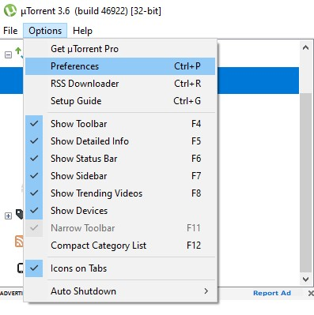
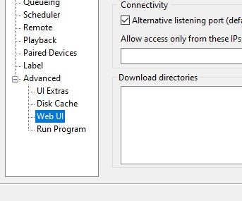
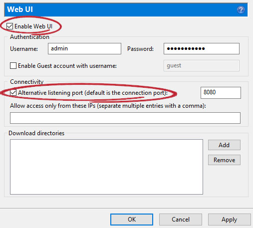
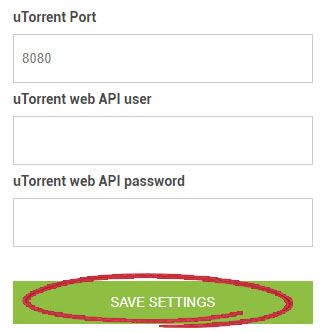

Step-1
First, DOWNLOAD UTORRENT DESKTOP, install it on your computer and run it.
Step-2
Open the uTorrent application.Go to Options->Preferences

Step-3
Go to this page from the left menuGo to Advanced->Web UI

Step-4
Activate these options.Enable Web UI and Alternative listening port

Step-5
Enter the information here in the form above and click Save Settings button.
